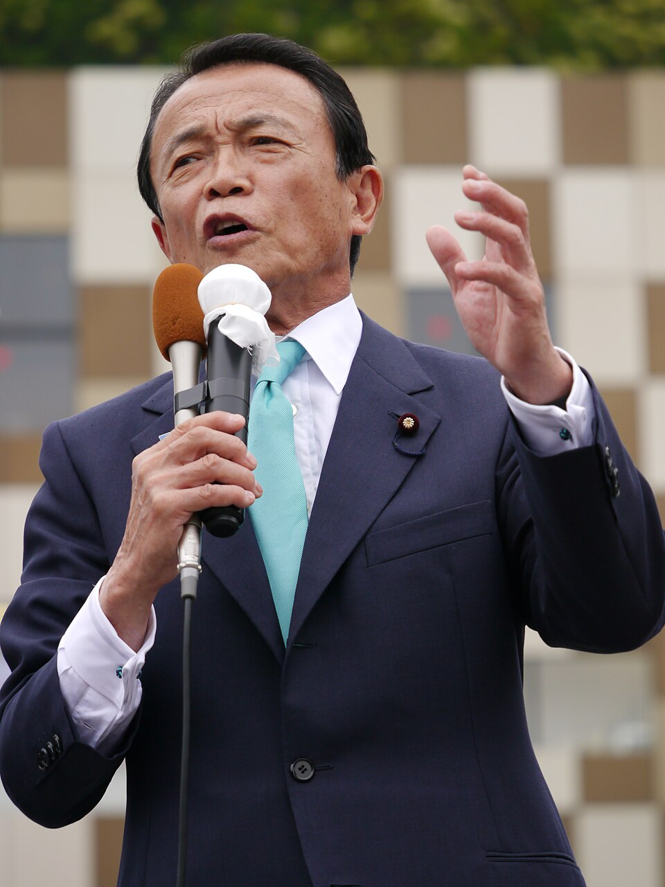
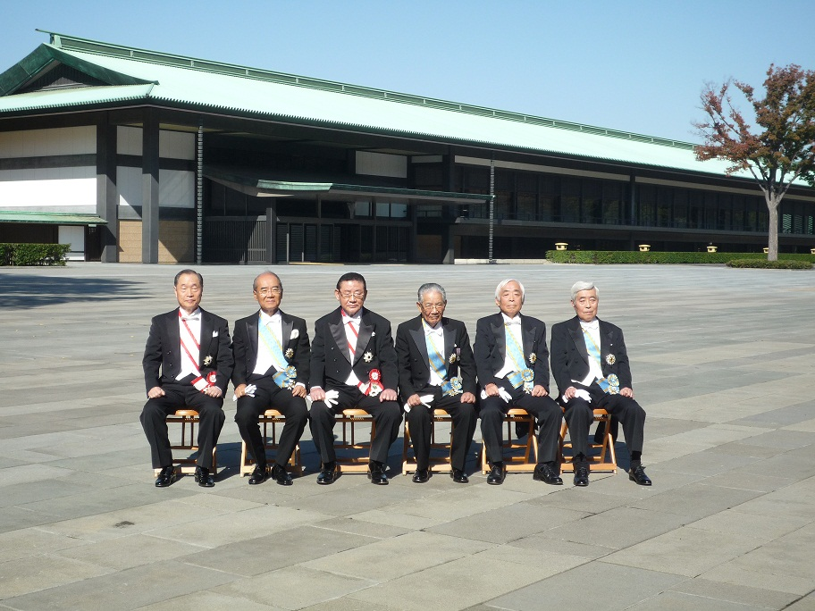

.jpg){kind=link}
坂
坂井辰史
さかい・たつし
みずほFG執行役社長・代表執行役
役割：2021年障害の経営責任を負い、2022年4月1日に取締役を辞任
その後：取締役辞任23
2002年〜2024年
2002年、第一勧業銀行・富士銀行・日本興業銀行の統合初日にATM停止、二重引落し、誤記帳などが発生し。口座振替等の遅延は約250万件に達した。1
2011年、東日本大震災後の義援金振込集中で夜間バッチが異常終了し、未処理の蓄積、手動処理。人員配置と報告の不備が振込・ATM・給与振込の遅延へ広がった。2
2021年、MINORIで2月から9月に顧客影響障害が8回発生した。金融庁と特別調査委員会は、技術要因だけでなく経営陣の監督、IT人材、危機対応、顧客の視点、企業風土を問題とし。2021年11月に業務改善命令が出された。3

2002年4月1日、第一勧業銀行、富士銀行、日本興業銀行の再編により。みずほ銀行とみずほコーポレート銀行が発足した。営業初日からATMの一部停止、顧客口座からの二重引落し、支払誤記帳、公共料金等の口座振替遅延が発生し。遅延は約250万件に拡大した。金融庁は同年6月19日、みずほに業務改善命令を出した。12
金融庁は、システムテストと運用テストが適切でなかったこと、テスト不足などの重要情報が開発責任行のシステム開発部門内にとどまったこと。大量事務処理を支える事務インフラが不十分だったことを原因として整理した。日本銀行も5月8日から6月5日まで考査を行い、障害対応、システム統合計画。経営層を含む体制整備について報告を求めた。みずほは改善・対応策と経営責任に関する報告を提出した。24
１． みずほ銀行においては、４月１日及び４月８日、対外接続用コンピュータであるグローバルプロセッサーに不具合があったことから、ＡＴＭ障害が発生した。また、４月１日以降、システムの不具合やデータ受付事務の混乱等があったことから、口座振替の引落遅延や口座振替委託企業への引落結果通知の遅延、振込遅延、二重引落などの障害が発生した。 ３． 今回のシステム障害が発生した原因は、(1) システムの機能を確認するシステムテストや運用テストが適切に実施されていなかったなど、最低限必要な準備ができていなかったこと、(2) テストが不十分であった等の重要な情報が、一部の開発責任行のシステム開発部門内にとどまっていたことなど、グループ内での報告・連絡態勢に重大な問題があり、十分なチェックが働かなかったこと、(3)ＣＢにおいて大量の事務処理を支える事務インフラが不十分であったこと、等にある。 ４． このような最低限の準備ができなかった根本原因は、旧経営陣がシステム統合に係るリスクを十分認識していなかったことから、統合に伴うシステム開発等の前提となる基本的事項の意思決定が遅れ、システム開発・テスト、事務の訓練に必要な期間が十分に確保できなかったことにある。
意味：2002年の公式認定は、障害を単なるコンピュータ故障ではなく、統合を主導した経営陣のリスク認識と準備不足の問題として位置づけている。[同資料](https://www.fsa.go.jp/news/newsj/13/ginkou/f-20020619-1.html)
2011年3月11日の東日本大震災後、3月14日夜に特定の義援金口座へ振込入金が集中した。一口座当たりの処理可能件数の上限を超えたため夜間バッチが異常終了し、処理結果データの一部が欠落した。復旧処理が翌日の営業店開始時刻までに終わらず、自動運行が手動に切り替わった。未処理の蓄積、手動処理に伴う人為的ミス、為替の未送信が重なり、営業店、ATM、ダイレクトチャネル。口座振替へ影響が広がった。35
3月15日の国内為替は約6万件、約4,900億円が未処理となり、3月16日も約6万件。約800億円が未処理となった。金融庁は5月31日、みずほ銀行とみずほフィナンシャルグループに業務改善命令を出した。直接原因と二次障害を分け、初動対応の遅滞、障害報告態勢、為替送信、関係会社・部局間の連携。人員投入と配置指示の遅れを指摘した。みずほ銀行頭取の西堀利氏は障害対応の長期化を理由に全国銀行協会会長就任を辞退した。67
１．３月１４日夜、１６日早朝にそれぞれ発生した夜間バッチ処理の異常終了（以下、「一次障害」という。）が、当行の不適切な復旧対応の結果、ATM障害や大量の振込処理遅延等へと拡大（以下、「二次障害」という。）した。 ２．今回のシステム障害の直接的な原因は、（１）特定の義援金募集口座が、法人・リーフ口（無通帳方式）との取扱いとなっていなかったこと等から、振込件数がバッチ処理上限値を超過したこと、（２）こうした一次障害に加え、障害に対する初動対応の遅滞、システム障害報告態勢の不備、為替送信の対応不備、関係会社・部局間の連携不備及び適切な人員投入・配置の指示の遅れがあったこと等により二次障害が発生・拡大したこと、等にある。 ３．これらの対応の不備が生じた原因は、上記に加え、（１）経営陣の初動の遅れを要因とした危機管理体制上の問題があったこと、更に、（２）経営陣において、グループ内連携・報告態勢の整備、システムコンティンジェンシープランの整備、システムへの投資戦略、人材育成と適材適所の人材配置、顧客対応態勢の整備、などに対する取組が不十分であったことにある。
意味：金融庁は、一次障害と、経営・組織対応によって拡大した二次障害を明確に区別している。[同処分](https://www.fsa.go.jp/news/22/ginkou/20110531-5.html)
2011年障害を受け、みずほは、みずほ銀行、みずほコーポレート銀行、みずほ信託銀行の基幹システムを一元化するMINORIを開発し。2019年7月に移行した。複数の旧システムを統合した大規模システムについて、金融庁は2021年11月、経営執行部門がIT現場の実態を十分に理解しないまま。障害発生時も影響範囲が局所的になりやすいという特性を過信したと指摘した。89
2021年2月28日、みずほe-口座への一括切替中に。定期性預金システムの取消情報管理テーブルでINDEX FILEの使用率が100％となる容量超過が発生した。ATMの大半が停止し、通帳・カードが取り込まれて戻らない事象が多数発生した。3月3日にはネットワーク機器故障でATM29台が停止し、3月7日にはカードローンのプログラム更新エラー、3月12日にはデータセンターの通信制御装置故障が起きた。特別調査委員会は原因だけでなく、復旧、顧客告知、経営層への報告。取込み仕様を調査した。1011
本委員会は、一連の本障害につき、MINORIを中心とするITシステムのメカニズム面において共通する原因を認めないが、「第3記載の本障害に係る原因分析」及び「2002年、2011年発生の障害事例で原因とされた点との共通性」等に照らし、本障害に共通する人為的側面の原因として、①危機事象に対応する組織力の弱さ、②ITシステム統制力の弱さ、及び③顧客目線の弱さ、の3点が存在し、さらに、それらの根底には、④それらが容易には改善されない体質ないし企業風土があるものと認めた。これらはいずれも、以下に見るように、今後の再発防止への取組みにおいて、基本的な課題として認識されるべきである。
意味：第三者委員会は、2021年の障害について2002年・2011年との共通性を踏まえ、技術ではなく組織・統制・顧客視点・企業風土を根本課題と認定している。認定した。[同報告書](https://www.mizuho-fg.co.jp/release/pdf/20210615release_2_jp.pdf)
みずほFGは3月22日に特別調査委員会の調査を開始し、6月15日に報告書を公表した。報告書は、危機事象に対応する組織力、ITシステム統制力、顧客の視点の弱さと。その根底にある企業風土を共通課題として整理した。8月20日にも全営業部店で一定時間、店頭取引ができない障害が発生し、2月から9月の顧客影響障害は合計8回となった。金融庁は9月22日と11月26日に処分を出し、取締役会の牽制、IT人材の配置、MINORIの運用管理。外為法とAML態勢を問題視した。12139
当行及び当行の親会社である当社は、このように短期間に複数のシステム障害を発生させたことにより、個人・法人の顧客に重大な影響を及ぼし、社会インフラの一翼を担う金融機関としての役割を十分に果たせなかったのみならず、日本の決済システムに対する信頼性を損ねたと考えられ、関係する当行及び当社の経営陣の責任は重大である。 このような原因の背景には、当行及び当社の執行部門が、IT現場の実態を十分に把握・理解しないまま、MINORIが安定稼働していると誤認し、障害発生時も影響範囲が局所的になりやすいというMINORIの特性を過信したことから、システムの安定稼働に必要な事項を十分に洗い出さずに、MINORIを開発フェーズから保守・運用フェーズへ態勢を移行させた上、MINORIの保守・運用に必要な人員の配置転換や維持メンテナンス経費の削減等の構造改革を推進したことが認められる。
意味：2021年11月の金融庁処分は、経営陣の責任を重大とし、IT現場の実態を把握しないままMINORIを過信した経営判断を問題視した。[同処分](https://www.fsa.go.jp/news/r3/ginkou/20211126/20211126.html)
金融庁の2021年11月処分後、みずほFGは坂井辰史社長の辞任、みずほ銀行の藤原弘治頭取の退任を公表し。坂井氏の取締役辞任は2022年4月1日付となった。みずほは2022年度末までに業務改善計画の全ての取組みを実行したと公表し、2023年度について大規模障害0件、復旧3時間超0件、翌日扱い障害0件。通帳・カード取込み0件と報告した。ただし、金融庁による業務改善命令の正式解除や、改善が恒久的に終結したとの公的認定は未確認である。3時期の発端となった技術的事象はそれぞれ異なる。2002年は統合初日のテストと事務インフラ、2011年は特定口座への振込集中と夜間バッチ、2021年はe口座切替、月末処理、容量超過。機器故障が起点だった。一方で、重要情報の共有、全体状況の集約、緊急時の指揮命令、人員配置、顧客への告知という対応面の課題は。各時期の行政処分や調査報告に繰り返し登場する。2011年の報告は、最大リスクシナリオの検討不足と指揮命令系統の不明確さを記録し、2021年の報告は。経営陣への報告遅れとIT人材・予算の配分を問題にした。2021年11月の処分は2月28日の容量超過だけを対象にせず、取締役会が障害分析や予兆管理を継続的に把握する体制、経営執行部門がIT現場の状況を把握する方法。外部委託先を管理する仕組みまで対象にした。1415165109
2002年の処分では顧客対応と情報開示の迅速性・正確性も課題とされ、役員数の削減、外部有識者によるアドバイザリーボード、グループ一体感、人事の完全統合、役員報酬減額。旧経営陣の辞任が対応項目として示された。2011年の処分では持株会社としてのシステムコンティンジェンシープラン、IT投資戦略、人材育成。子会社管理とグループ内連携が求められた。2021年の特別調査委員会は、障害情報の一元集約、休日・時間外の危機対応、外部委託先の管理、ATMの通帳・カード取込み。顧客利益への配慮を検討した。これらの資料は、障害の発端、復旧の遅れ、顧客への影響、経営陣の報告受領。再発防止の進捗を別々の事実として記録している。みずほ自身の2023年度報告は改善状況を示すが、2026年11月15日時点で金融庁が業務改善命令を正式解除したとの資料は確認できない。追加の確認範囲では、裁判所の刑事・民事判決は確認できず、主要措置は行政処分と経営人事である。2610
この範囲で未確認の点は未確認として残した。9

| みずほ銀行内幸町本部ビル | 東京都千代田区内幸町1丁目1-5付近 | 2002年・2011年・2021年の経営・システム運用の中心拠点 | 26 |
| みずほFG本社・大手町タワー | 東京都千代田区大手町1丁目5-6 | みずほFGの本社所在地 | 20 |
| 金融庁 | 東京都千代田区霞が関3丁目2-1 | 2002・2011・2021年の行政処分・検査機関 | 27 |
| 日本銀行本店 | 東京都中央区日本橋本石町2丁目1-1 | 2002年にみずほコーポレート銀行を考査した機関 | 4 |
| 東京地方裁判所 | 東京都千代田区霞が関1丁目1-4 | 本件関連訴訟の確認対象となる裁判所。主要判決は未確認 | 28 |
| みずほリサーチ＆テクノロジーズ | 東京都千田区神田錦町2丁目3 | e口座案件等の開発・保守委託先として報告書に登場 | 10 |
| 東日本大震災被災地域 | 東北地方 | 義援金振込集中の背景となった災害 | 17 |
2002年は三行統合後のシステムと事務インフラ、2011年は義援金口座への振込集中と夜間バッチ、2021年はMINORIの容量超過・機器故障・運用管理が、ATM、振込。窓口などの顧客接点へ影響した。69
さかい・たつし
みずほFG執行役社長・代表執行役
役割：2021年障害の経営責任を負い、2022年4月1日に取締役を辞任
その後：取締役辞任23
ふじわら・こうじ
みずほ銀行頭取
役割：2021年障害後の退任人事が公表された
その後：退任14
きはら・まさひろ
みずほFG社長・グループCEO
役割：坂井氏の後任として公表された
その後：2022年以降のFG社長23
にしぼり・さとる
2011年当時のみずほ銀行頭取
役割：障害対応を理由に全銀協会長就任を辞退
その後：頭取在任期間終了7
すずき・しゅんいち
財務大臣兼金融担当相
役割：2021年11月の行政処分について会見で説明
その後：行政処分を説明29
じみ・しょうざぶろう
2011年当時の金融担当相
役割：2011年障害とシステム統合問題について会見で言及
その後：会見で説明30
あそう・たろう
2021年当時の財務相
役割：2021年9月の行政処分と反復障害について説明
その後：会見で説明31
ながやす・かつのり
2011年の全銀協会長就任予定者
役割：西堀氏の辞退後、会長就任が決定
その後：全銀協会長7
おく・まさゆき
2011年の全国銀行協会会長
役割：みずほ障害後の会見で経緯を説明
その後：会見で説明7

かいなか・たつお
みずほFG社外取締役
役割：システム障害対応検証委員会委員長
その後：取締役会側を検証32
つきおか・たかし
みずほFG社外取締役
役割：システム障害対応検証委員会委員
その後：検証委員32
さとう・りょうじ
みずほFG社外取締役
役割：システム障害対応検証委員会委員
その後：検証委員32
こばやし・いずみ
みずほFG社外取締役
役割：システム障害対応検証委員会委員
その後：検証委員32
みけ・かねつぐ
2021年の全国銀行協会会長
役割：第三者委員会報告書のITガバナンス指摘について会見で言及
その後：会見で説明33
監督当局
役割：2002年、2011年、2021年に行政処分
その後：改善計画を監督9
中央銀行
役割：2002年にみずほコーポレート銀行を考査
その後：考査・モニタリング4
相関図は、2002年・2011年・2021年の障害をめぐる経営陣、監督当局、検証委員、システム部門、委託先。顧客の関係を示す。公的資料で確認できる職務上の関係を中心にし、個人的な確執は未確認としている。
上司と部下。2021年当時、坂井氏はみずほFG社長、藤原氏はみずほ銀行頭取で。両社の経営トップとして障害対応と再発防止を担った。2021年11月の行政処分後、両者の退任・辞任人事が公表された。みずほ銀行14
後任・前任。坂井氏の取締役辞任後、木原氏がFG社長・代表執行役候補として公表された。ただし、両者間の個人的な確執は未確認。みずほFG23
後任・前任。藤原氏の退任後、木原氏がグループ経営を引き継いだ。個人的な関係性は未確認。みずほFG23
同業団体の会長・前任者。西堀氏は障害対応を理由に全銀協会長就任を辞退し、奥氏が暫定的に続投した。西堀氏から奥氏への権限継承が公表された。全国銀行協会7
同業団体の後任。西堀氏の辞退後、永易氏を7月1日からの全銀協会長に内定した。全国銀行協会7
監督当局と被監督金融機関。2002年、2011年、2021年に金融庁が業務改善命令を発出し。経営陣に改善計画と責任明確化を求めた。金融庁2002年、金融庁2011年、金融庁2021年269
監督・考査。2002年、日本銀行は障害対応や統合計画について考査・モニタリングを行った。日本銀行4
庇護・監督。甲斐中氏は社外取締役としてシステム障害対応検証委員会の委員長を務めた。みずほFG株主総会資料32
監督。佐藤氏は同検証委員会の委員として再発防止策に関与した。みずほFG株主総会資料32
監督。月岡氏は同検証委員会の委員として取締役会側の検証に関与した。みずほFG株主総会資料32
監督。小林氏は同検証委員会の委員として再発防止の検証に関与した。みずほFG株主総会資料32
委託者と受託者。e口座案件等の開発委託関係があり、特別調査委員会は外部委託先管理も検討した。みずほFG報告書10
上司と部下。特別調査委員会は、システム担当部門と顧客対応部門の連携不足、経営層への報告遅れを指摘した。みずほFG報告書10
上司と部下。金融庁は、IT人材の適正配置や再配置がシステム運用力に影響したと指摘した。金融庁2021年処分9
サービス提供者と利用者。ATMへのカード・通帳取込み、振込遅延、窓口取引停止により顧客が直接影響を受けた。金融庁2021年処分9
しかし、不測の危機事象である本障害発生時には、他の部署からの情報を適切に把握するための連携がうまく機能しなかっただけでなく（横の連携）、一元的な情報集約を担うべき有事対応に係る体制が機能せず、また、経営陣への報告が遅く非常対策PTの設置も遅れたなど経営陣に対する情報の連携も十分ではなかったのであり（縦の連携）、組織としての危機対応力の弱さが顕著に表れたといわざるを得ない。 MINORIの安定稼働は経営戦略上最重要のテーマであって、障害影響の波及の大きさ、システム構造の経年によるブラックボックス化、障害発生時の復旧や顧客影響の極小化といったMINORIの構造的な問題に適切に対処する不断の努力が必須となり、人材及び予算等のリソースがリスクベースの考え方の下で適切に配分され、強力なITガバナンスに基づく適切なITマネジメントが行われることが重要であった。
意味：障害時の情報が経営陣に届かず、MINORIの構造的リスクに対する人員・予算配分も不十分だったとされる。[同報告書](https://www.mizuho-fg.co.jp/release/pdf/20210615release_2_jp.pdf)
本件のシステム障害について、暴力団、総会屋、仕手筋、フィクサー、海外口座。不審死との関係は公的資料で確認できない。2013年の反社会的勢力対応に関する別件行政処分は、2002年・2011年・2021年のシステム障害とは別問題である。
関与組織・人物：未確認 確認できない
関与組織・人物：未確認 確認できない
関与組織・人物：未確認 確認できない
関与人物：未確認 確認できない
関与人物：未確認 確認できない
関与主体：未確認 確認できない
関与人物：未確認 確認できない
みずほグループの別件コンプライアンス問題 指摘
やはり今回の原因というものをしっかりと我々としてもまた踏まえて、そして改善命令を出したわけでございますから、その後のみずほのこの行動をしっかりフォローアップしていくということであると思います。先程も申し上げましたけれども、一連のシステム障害の真因といたしましては、経営陣について、システムに関するリスクや専門性の軽視、ＩＴ現場の実態の軽視、また銀行本部等において顧客影響への感度の欠如、営業現場の実態軽視、さらに企業風土として言うべきことを言わない、言われたことだけしかしない姿勢があったものと認識をいたしてございます。こうした真因を踏まえまして、みずほ銀行及びみずほフィナンシャルグループにおいて、組織的行動力の強化や社内の意識変革など、具体的な取組みを進めていただきたいわけでありますが、こうしたことが再度起こることがないように、こうしたみずほの変革、そういうものについてしっかりと我々も注視をし、フォローアップをしていきたいと思っています。
意味：金融担当相の会見でも、2021年問題の真因として専門性軽視や現場軽視と顧客影響への鈍感さ及び発言を抑制する企業風土が列挙された。[同会見](https://www.fsa.go.jp/common/conference/minister/2021b/20211126-1.html)
| 顧客・取引先 | 0 | None | ATM停止、カード・通帳取込み、振込・給与入金・窓口取引の遅延。個別損害総額は未確認。 | 9 |
| 従業員 | 0 | None | 手動処理、顧客対応、休日・時間外勤務の負担。労務損害額は未確認。 | 10 |
| 株主 | 0 | None | ブランド毀損、経営陣交代、再発防止投資。将来収益リスク。総損失額は未算定。 | 9 |
| みずほ銀行・FG | 0 | None | 行政処分、経営責任、改修・訓練・監視の追加コスト。金額全体は未確認。 | 15 |
| 金融庁・日本銀行 | 0 | None | 検査、監督、モニタリングの負担。 | 4 |
| システム開発・保守会社 | None | None | 開発・保守契約と追加改修の金額は未確認。 | 10 |
| 裁判所 | 確認範囲内 | 刑事有罪判決は確認できない |
2002年・2011年・2021年のシステム障害に関する刑事責任。未確認9
| 裁判所 | 確認範囲内 | 主要な判決は確認できない |
システム障害による損害賠償請求。未確認35
| 金融庁 | 2002-06-19 | 業務改善命令 |
テスト、情報共有、事務インフラの不備。処分2
| 金融庁 | 2011-05-31 | 業務改善命令 |
義援金振込集中、初動、報告、連携。人員配置の不備。処分6
| 金融庁 | 2021-09-22 | 行政処分 |
システム更改・更新の管理態勢。処分13
| 金融庁 | 2021-11-26 | 業務改善命令 |
8回の障害、MINORI、取締役会。外為法・AML態勢。処分9
| みずほFG | 2022-04-01 | 取締役辞任 |
2021年障害後の経営責任。人事措置24
１． みずほ銀行においては、４月１日及び４月８日、対外接続用コンピュータであるグローバルプロセッサーに不具合があったことから、ＡＴＭ障害が発生した。また、４月１日以降、システムの不具合やデータ受付事務の混乱等があったことから、口座振替の引落遅延や口座振替委託企業への引落結果通知の遅延、振込遅延、二重引落などの障害が発生した。 ３． 今回のシステム障害が発生した原因は、(1) システムの機能を確認するシステムテストや運用テストが適切に実施されていなかったなど、最低限必要な準備ができていなかったこと、(2) テストが不十分であった等の重要な情報が、一部の開発責任行のシステム開発部門内にとどまっていたことなど、グループ内での報告・連絡態勢に重大な問題があり、十分なチェックが働かなかったこと、(3)ＣＢにおいて大量の事務処理を支える事務インフラが不十分であったこと、等にある。 ４． このような最低限の準備ができなかった根本原因は、旧経営陣がシステム統合に係るリスクを十分認識していなかったことから、統合に伴うシステム開発等の前提となる基本的事項の意思決定が遅れ、システム開発・テスト、事務の訓練に必要な期間が十分に確保できなかったことにある。
意味：2002年の公式認定は、障害を単なるコンピュータ故障ではなく、統合を主導した経営陣のリスク認識と準備不足の問題として位置づけている。[同資料](https://www.fsa.go.jp/news/newsj/13/ginkou/f-20020619-1.html)
５． また、顧客の求めるテストに応ずることができなかった等事前準備段階の不適切な対応はもとより、障害発生以後、顧客対応に適切性を欠き情報開示に迅速性・正確性を欠くなど緊急時対応においても不適切な対応が認められた。 ６． 今回の障害に関わるシステムの復旧作業は概ね終了しているが、当日中に修復可能な小規模な障害や内部事務の混乱など、なお解決を要する課題が残されており、早急に抜本的な再発防止策の策定・実施が必要である。 ２．顧客の信頼回復 (1)経営の革新 役員数の更なる削減 外部の有識者によるアドバイザリーボードの創設 (2)顧客第一の意識と行動の徹底 (3)グループの一体感の醸成、人事の完全統合 ３．責任の明確化 (1)役員報酬減額 (2)旧ＣＥＯ等責任者の辞任
意味：2002年時点で、復旧だけでなく情報開示や顧客第一と役員報酬及び旧経営陣の辞任まで行政対応の対象となっていた。[同資料](https://www.fsa.go.jp/news/newsj/13/ginkou/f-20020619-1.html)
本障害は、平成23年3月11日（金）に発生した東日本大震災発生に伴い、14日（月）におけるA社の義援金口座a及び15日（火）におけるB社の義援金口座bという特定の口座に、それぞれ大量の振込が集中したことにより、夜間バッチが異常終了したことに端を発するものであります。 みずほ銀行（以下、ＢＫ）は、上記の夜間バッチの異常終了に対してシステム復旧処理を実施したものの、一連の夜間バッチを翌日の営業店開始時刻までに終了させることができず、両日とも夜間バッチを中断し、バッチの日替り処理（以下「DJS切替」という。）を行いました。これにより、通常自動化されているシステム運行が手動に切り替わり、膨大な作業量を手作業で実施することとなりました。この結果、大量の為替の未送信が発生したほか、手動処理に伴う人為的ミスが発生し、翌日の営業店開始時刻が大幅に遅延したほか、ATMの停止等が発生することとなりました。
意味：2011年障害の発端と、夜間バッチ異常から手動作業や為替未送信とATM停止へ波及した経路を当事者自身が説明している。[同報告書](https://www.mizuhobank.co.jp/company/release/bk/2011/pdf/news110523_2.pdf)
本障害対応においては、システム部門内、経営陣ともに、情報不足もあり、各時点で想定される最大リスクシナリオが十分に検討されず、適切な判断がなされませんでした。また、ＢＫ及びみずほ情報総研株式会社（以下、MHIR）内における情報連携にも不備がありました。更にMHIRでは、統括機能が不足していたことにより、全体の状況把握が困難な状態が続きました。これら統括機能の不足により混乱した状況を早期に改善できなかった一因として、緊急時における、MHBK、MHIRの経営陣間の指揮命令系統が不明確でありました。 本障害は、夜間バッチの初期段階の処理中に異常終了したことを起点としていますが、当該事象を想定したシステムコンティンジェンシープランが整備されておりませんでした。
意味：システム部門や子会社と経営陣の間で、危機時の情報集約と指揮命令が機能しなかったとみずほ自身が認めている。[同報告書](https://www.mizuhobank.co.jp/company/release/bk/2011/pdf/news110523_2.pdf)
ある事象の勘定系システム全体への影響を分析する能力を有し、あるいは多重障害の復旧見通しが立てられる実務人材が不足しておりました。また、一連の障害を通じて、システム全体を俯瞰でき、かつ、多重障害の陣頭指揮を執り得るマネジメントの人材も不足しており、訓練を通じて人材を育成する視点が希薄でありました。 システム部門においては、長期安定稼動システムの仕様の可視化が伴わず、その承継が不十分でありました。 東日本大震災というわが国の未曽有の危機の中にあって、「経済の血流を守る」という金融機関としての重要な使命を適切に果たすことが出来なかったことは極めて遺憾であります。 今回のシステム障害により、総合振込・給与振込・口座振替といった決済取引が滞り、他行でお取引されるお客さまも含め、法人のお客さま、個人のお客さまへの入金が遅延したことに加え、ＡＴＭ、各種ＥＢサービス、みずほダイレクトの稼動停止等も発生し、多くのお客さまをはじめ、広く社会の皆さまに大変ご迷惑をお掛けしました。
意味：2011年の報告書は、障害対応能力を担う人材と訓練の不足を、決済インフラとしての使命の失敗と結びつけている。[同報告書](https://www.mizuhobank.co.jp/company/release/bk/2011/pdf/news110523_2.pdf)
１．３月１４日夜、１６日早朝にそれぞれ発生した夜間バッチ処理の異常終了（以下、「一次障害」という。）が、当行の不適切な復旧対応の結果、ATM障害や大量の振込処理遅延等へと拡大（以下、「二次障害」という。）した。 ２．今回のシステム障害の直接的な原因は、（１）特定の義援金募集口座が、法人・リーフ口（無通帳方式）との取扱いとなっていなかったこと等から、振込件数がバッチ処理上限値を超過したこと、（２）こうした一次障害に加え、障害に対する初動対応の遅滞、システム障害報告態勢の不備、為替送信の対応不備、関係会社・部局間の連携不備及び適切な人員投入・配置の指示の遅れがあったこと等により二次障害が発生・拡大したこと、等にある。 ３．これらの対応の不備が生じた原因は、上記に加え、（１）経営陣の初動の遅れを要因とした危機管理体制上の問題があったこと、更に、（２）経営陣において、グループ内連携・報告態勢の整備、システムコンティンジェンシープランの整備、システムへの投資戦略、人材育成と適材適所の人材配置、顧客対応態勢の整備、などに対する取組が不十分であったことにある。
意味：金融庁は、一次障害と、経営・組織対応によって拡大した二次障害を明確に区別している。[同処分](https://www.fsa.go.jp/news/22/ginkou/20110531-5.html)
〖みずほフィナンシャルグループ〗 １．持株会社として、（１）システムコンティンジェンシープランの整備、（２）現行システムに内在する課題を踏まえたＩＴ投資戦略、（３）人材育成や適材適所の人材配置、（４）子会社等の管理・グループ内連携態勢、等について、経営陣の機能発揮等に係る問題が認められ、改善が必要である。 ２．また、平成１４年のシステム障害の改善策として掲げられたグループ一体感の醸成への取組が十分でなく、依然として、企業風土等に課題が認められる。 〖みずほ銀行〗 ５．経営責任の明確化 ６．上記を実施するための改善計画等を提出（６月末期限）の上、実施状況を定期的に報告すること
意味：金融庁は、2002年に掲げた「グループ一体感」が2011年にも十分実現していないと指摘した。[同処分](https://www.fsa.go.jp/news/22/ginkou/20110531-5.html)
本委員会は、一連の本障害につき、MINORIを中心とするITシステムのメカニズム面において共通する原因を認めないが、「第3記載の本障害に係る原因分析」及び「2002年、2011年発生の障害事例で原因とされた点との共通性」等に照らし、本障害に共通する人為的側面の原因として、①危機事象に対応する組織力の弱さ、②ITシステム統制力の弱さ、及び③顧客目線の弱さ、の3点が存在し、さらに、それらの根底には、④それらが容易には改善されない体質ないし企業風土があるものと認めた。これらはいずれも、以下に見るように、今後の再発防止への取組みにおいて、基本的な課題として認識されるべきである。
意味：第三者委員会は、2021年の障害について2002年・2011年との共通性を踏まえ、技術ではなく組織・統制・顧客視点・企業風土を根本課題と認定している。認定した。[同報告書](https://www.mizuho-fg.co.jp/release/pdf/20210615release_2_jp.pdf)
しかし、不測の危機事象である本障害発生時には、他の部署からの情報を適切に把握するための連携がうまく機能しなかっただけでなく（横の連携）、一元的な情報集約を担うべき有事対応に係る体制が機能せず、また、経営陣への報告が遅く非常対策PTの設置も遅れたなど経営陣に対する情報の連携も十分ではなかったのであり（縦の連携）、組織としての危機対応力の弱さが顕著に表れたといわざるを得ない。 MINORIの安定稼働は経営戦略上最重要のテーマであって、障害影響の波及の大きさ、システム構造の経年によるブラックボックス化、障害発生時の復旧や顧客影響の極小化といったMINORIの構造的な問題に適切に対処する不断の努力が必須となり、人材及び予算等のリソースがリスクベースの考え方の下で適切に配分され、強力なITガバナンスに基づく適切なITマネジメントが行われることが重要であった。
意味：障害時の情報が経営陣に届かず、MINORIの構造的リスクに対する人員・予算配分も不十分だったとされる。[同報告書](https://www.mizuho-fg.co.jp/release/pdf/20210615release_2_jp.pdf)
しかし、2月28日障害では、取消情報管理テーブルのINDEX FILEの容量超過のリスク認識の不足、運用管理や障害復旧対応における情報収集態勢等の不備・不十分性、3月7日障害では、カードローン案件に係るテスト不足や外部委託先の管理体制の不備、3月12日障害では、障害発生時の復旧対応に関し、訓練の不足、外部委託先の管理体制及び顧客対応における情報共有体制の問題などがそれぞれ認められ、全般に、ITガバナンス及びITマネジメントが十分機能せず、ITシステムの統制力に脆弱性があった。 また、ATMやダイレクトを利用する顧客は、銀行にとっては「顔の見えない顧客」であり、関心が薄いことも否定できないように思われる。
意味：技術的な容量超過だけでなく、外部委託先管理や訓練と顧客対応情報の共有まで統制の脆弱性として扱われている。[同報告書](https://www.mizuho-fg.co.jp/release/pdf/20210615release_2_jp.pdf)
第4に、「体質ないし企業風土」に係る課題については、本障害という有事において、自らの持ち場を超えた積極的・自発的な行動によって、問題を抑止・解決するという姿勢が弱い場面がしばしば見受けられた。また、障害の内容・顧客への影響の全容が完全に明確ではない時点において、リスクがあるものとして、発言し行動することを控えるような状況も認められた。 役職員にこのような積極的・自発的姿勢が欠ける要因としては、積極的に声を上げることでかえって責任問題となるリスクをとるよりも、自らの持ち場でやれることはやっていたといえる行動をとる方が組織内の行動として合理的な選択になるという企業風土があるためではないか、と思われた。
意味：報告書が「声を上げない」行動を、個人の性格ではなく、責任を負うことを避ける組織内の合理性として分析している。[同報告書](https://www.mizuho-fg.co.jp/release/pdf/20210615release_2_jp.pdf)
当行及び当行の親会社である当社は、このように短期間に複数のシステム障害を発生させたことにより、個人・法人の顧客に重大な影響を及ぼし、社会インフラの一翼を担う金融機関としての役割を十分に果たせなかったのみならず、日本の決済システムに対する信頼性を損ねたと考えられ、関係する当行及び当社の経営陣の責任は重大である。 このような原因の背景には、当行及び当社の執行部門が、IT現場の実態を十分に把握・理解しないまま、MINORIが安定稼働していると誤認し、障害発生時も影響範囲が局所的になりやすいというMINORIの特性を過信したことから、システムの安定稼働に必要な事項を十分に洗い出さずに、MINORIを開発フェーズから保守・運用フェーズへ態勢を移行させた上、MINORIの保守・運用に必要な人員の配置転換や維持メンテナンス経費の削減等の構造改革を推進したことが認められる。
意味：2021年11月の金融庁処分は、経営陣の責任を重大とし、IT現場の実態を把握しないままMINORIを過信した経営判断を問題視した。[同処分](https://www.fsa.go.jp/news/r3/ginkou/20211126/20211126.html)
やはり今回の原因というものをしっかりと我々としてもまた踏まえて、そして改善命令を出したわけでございますから、その後のみずほのこの行動をしっかりフォローアップしていくということであると思います。先程も申し上げましたけれども、一連のシステム障害の真因といたしましては、経営陣について、システムに関するリスクや専門性の軽視、ＩＴ現場の実態の軽視、また銀行本部等において顧客影響への感度の欠如、営業現場の実態軽視、さらに企業風土として言うべきことを言わない、言われたことだけしかしない姿勢があったものと認識をいたしてございます。こうした真因を踏まえまして、みずほ銀行及びみずほフィナンシャルグループにおいて、組織的行動力の強化や社内の意識変革など、具体的な取組みを進めていただきたいわけでありますが、こうしたことが再度起こることがないように、こうしたみずほの変革、そういうものについてしっかりと我々も注視をし、フォローアップをしていきたいと思っています。
意味：金融担当相の会見でも、2021年問題の真因として専門性軽視や現場軽視と顧客影響への鈍感さ及び発言を抑制する企業風土が列挙された。[同会見](https://www.fsa.go.jp/common/conference/minister/2021b/20211126-1.html)
システム障害の発生予兆・復旧手順を取締役会へ報告する仕組み。9
MINORI移行後の人材再配置を踏まえ、運用知識を維持する。9
ATMで通帳・カードを取り込まない仕様への改善。取込み0件を報告した。36
初報を概ね30分以内、目安1時間以内とする運用。36
ATMスピーカー付きカメラの全拠点設置と実践型訓練。16
システム更改・更新時のリスク管理強化。13
開発・保守委託先の管理を原因分析と改善の対象にする。10
みずほ側：2011年は義援金口座への振込集中とバッチ処理上限超過、2021年2月はe口座切替と容量超過が発端だったと説明している。510
金融庁・第三者委員会：個別の故障やエラーに加え、経営陣の理解、危機対応、IT統制、顧客観点。企業風土を問題とした。933
みずほ側：MINORIの特性と個別の処理集中、容量超過、機器故障を原因として説明している。10
金融庁：MINORIの特性を過信し、保守・運用に必要な人員配置転換や維持メンテナンス経費の削減を推進したことを問題とした。9
みずほ側：金融庁の命令を踏まえた自主的な経営判断として人事を公表した。14
金融担当相：行政処分による直接の解任ではなく、みずほ側の人事判断として説明した。29